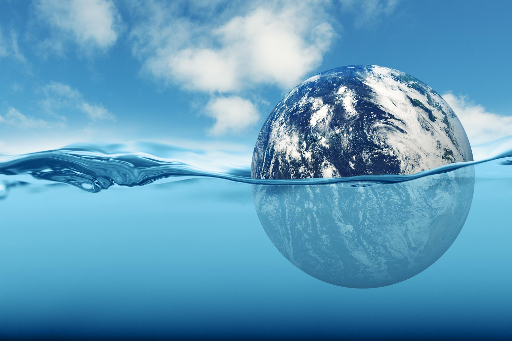

Sea level rise is one of the most serious environmental challenges facing our planet today. As global temperatures continue to increase, glaciers and ice sheets are melting at a faster rate, causing more water to flow into the oceans. At the same time, warmer ocean water expands, which also contributes to rising sea levels. Many coastal communities around the world are already experiencing the effects of sea level rise. Higher sea levels can increase flooding, erode coastlines, damage homes and infrastructure, and threaten wildlife habitats. If action is not taken, these impacts are expected to become more severe in the future. This website aims to educate people about the causes, effects, and possible solutions to sea level rise. By understanding the issue, we can make informed decisions and work together to reduce the impacts of climate change.

